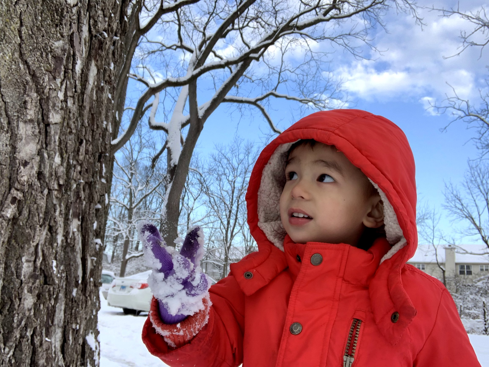
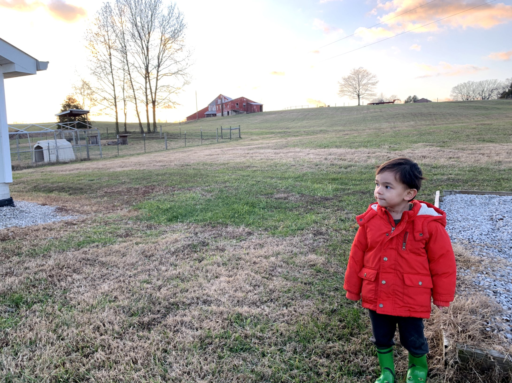
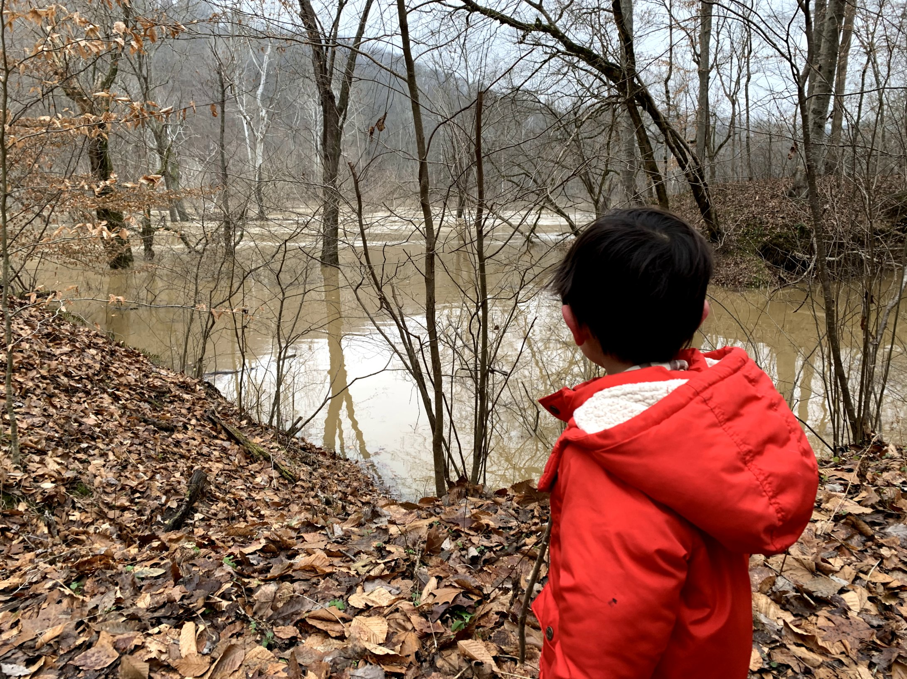
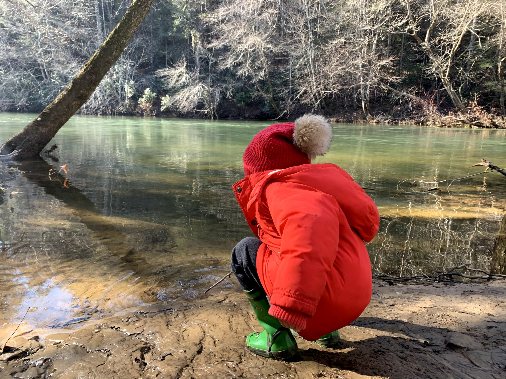
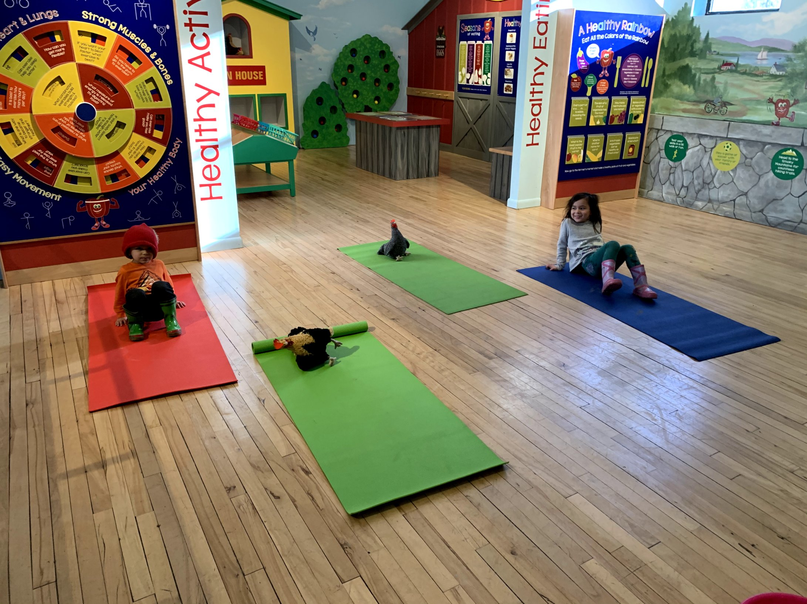
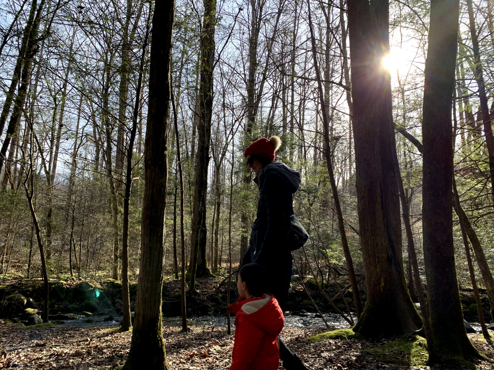
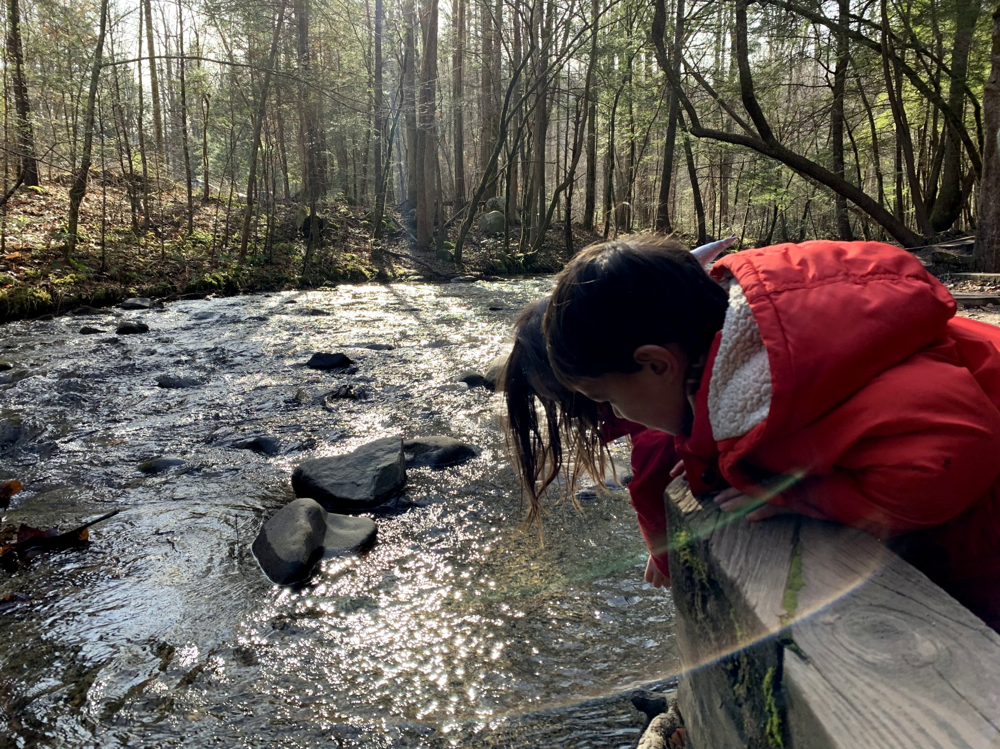
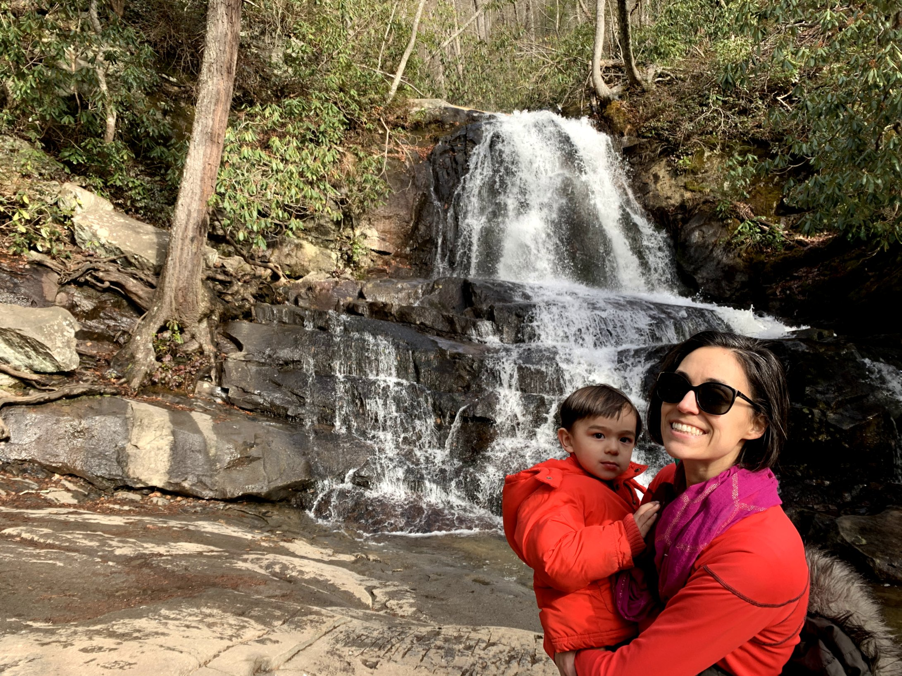

Sabbatical Christmas (Last Update Dec 20th)
December 2019 - Janurary 2020
Day 1 - Chicago to West Lafayette to Indianapolis
Every 4-5 years, my employer sets us free for one month to ... I suppose think about life. Since it would include traveling with 2 young children, Dana and I decided that we spend the month road tripping to warmer weather. Driving no more than 4 hours any day, stopping at the great sights on our way to the South.
On the first day, we left after rush hour in Chicago and only had time to each lunch in West Lafayette and see the campus a little bit because there was a blizzard in Central Indiana. We saw a bunch of trucks sliding off the road but Sharon (our beloved Saburu) managed to AWD herself without incident to the Chicken farm we were staying at.

Day 2,3 - Indianapolis to Louisville to Park City, KY to Mammomth Cave NP
The 2nd day started with packing up and driving to Louisville. I guess the special food in Louisville is the "Hot Brown" which is just an open face turkey sandwich with some Hollandaise sauce. Googling the best Hot Brown lead me to Wild Yolk.
Then we spent some time playing in Louisville's Ohio riverfront playground before driving to where we were staying that night in Park City, KY. We were staying in a dairy farm that night!

We learned that the dairy farm was once owned by a Amish family. After a good night's sleep, we headed off the Mammoth Cave National Park. I was initially a bit hesitant to go on a cave tour with 2 wild children, but we signed them up for the Frozen Niagra tour and they ended up behaving great! It's too bad most of my photo from the caves didn't come out.
However, in order to protect the caves, the NPS also has to protect the surrounding lands -- which means some pretty fun hikes, including this one where the river Styx, an underwater river, meets the Green River, a surface river.

Farm is probably the best place to stay with children. While we were cleaning up to move on to our next destination, we just told the kids to go out and terrorize the chicken, goats, and cows. They were looked after by a shepard dog named "Mac" and tired themselves out before we departed.

Day 4,5 - Mammoth Cave NP to Obed Wild and Scenic River to Oak Ridge to Seymour TN to Smoky Mountains NP
This was going to be the longest leg of our driving so we decided to price in some stops to make it more enjoyable. One of the stops we wanted to hit up was the Obed Wild and Scenic River. I mindlessly punched it into my Google machine and it decided to take me down a regrettable back alley of Kentucky. So I backtracked to "Clear River" and found this nice picnic spot.
Dana even got to start a campfire here.

After this pit stop, we decided to goto Oak Ridge because it was suppose to be a Manhattan Project work site where 74,000 people lived and worked on building the atomic bomb. However, it turned out to be just a historic site which shares a building with a children's museum, but a shitty one at that. So I left them in the "chicken room" and went to go check out the Manhattan Project exhibits.

Erin, Dana's sister met up with us that evening which was great because now the 2 kid's attention are spread across 3 adults. The next morning, we headed to Smoky Mountain NP. Unexpectedly, it is next to a insane tourist attraction called "Dollywood," which is basically the Southern Country music version of DisneyWorld. Anyways, December is their off-season so it wasn't insane, but I
can imagine how it would completely insane during the summers. We managed to somehow convince the kids to go on 2 hikes at Smoky Mountain, totaling ~3.6 miles. This picture is from the hike to Cataract Falls.

The greatest part of finally getting to Tennesse was that it was finally over 50 degrees!

Then the 2.6 mile roundtrip hike to Laurel Falls, which both kids walked both ways?!
